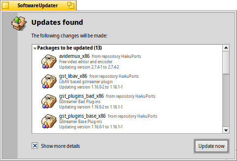

Aktualizácia softvéru
| Panel: | ||
| Umiestnenie: | /boot/system/apps/SoftwareUpdater | |
| Nastavenia: | ~/config/settings/SoftwareUpdater_settings |
Aktualizácia softvéru skontroluje všetky dostupné zdroje softvéru (pozri Nastavenia zdrojov softvéru), či obsahujú aktualizácie nainštalovaných balíkov vrátane aktualizácií samotného systému Haiku. Dostupné aktualizácie naraz stiahne a nainštaluje.
Po spustení skontroluje Aktualizácia softvéru aktualizácie balíkov a zobrazí ich zoznam s dostupnou novou verziou a krátkym popisom. Môžete sa rozhodnúť - názov zdroja softvéru každého balíka a zobrazenie starej aj novej verzie balíka.
spustí sťahovanie všetkých balíkov a ich následnú inštaláciu.
V závislosti od aktualizovaných balíkov môže byť nutné reštartovať Haiku, aby sa aktualizácia dokončila. Zvyčajne stačí reštartovať aktualizované aplikácie - iba zmeny samotného Haiku môžu vyžadovať reštart systému.
Every time packages are updated, installed or uninstalled (either with SoftwareUpdater/HaikuDepot or in Terminal via pkgman), a new "state" is saved at /system/packages/administrative/. This makes it possible to boot into any past state from the Boot Options, making it easy to solve issues that may arise from having installed/updated a package that doesn't work as expected.
As these "state" folders hold copies of the updated/uninstalled packages, the "administrative" folder can grow quite significantly over time. Until there's an option for an automatic clean-up, it's a good idea to check the size of the "administrative" folder from time to time and remove the oldest states, that you probably won't have to boot into again.
Downgrading to a previous Haiku revision
It's rare but possible that an update to the latest Haiku revision ("hrev") introduced a regression you're not willing to live with. From the boot options menu you can load a former, working state (see Boot Loader - Troubleshooting). Find the last working state and boot into it.
To permanently downgrade to this revision, you have to point the 'Haiku' repository to that hrev. You find the current revision under "About Haiku" from the Deskbar. As example, to downgrade to hrev56231, open a Terminal and enter:
pkgman add https://eu.hpkg.haiku-os.org/haiku/master/$(getarch)/r1~beta3_hrev56231 pkgman full-sync
Note, that you're now stuck with that revision, Haiku won't get any new updates. You should report the regression and help to fix it, if you can. Once fixed - watch the commit logs - you can change back to the "current" repo with:
pkgman add https://eu.hpkg.haiku-os.org/haiku/r1beta3/$(getarch)/current pkgman full-sync